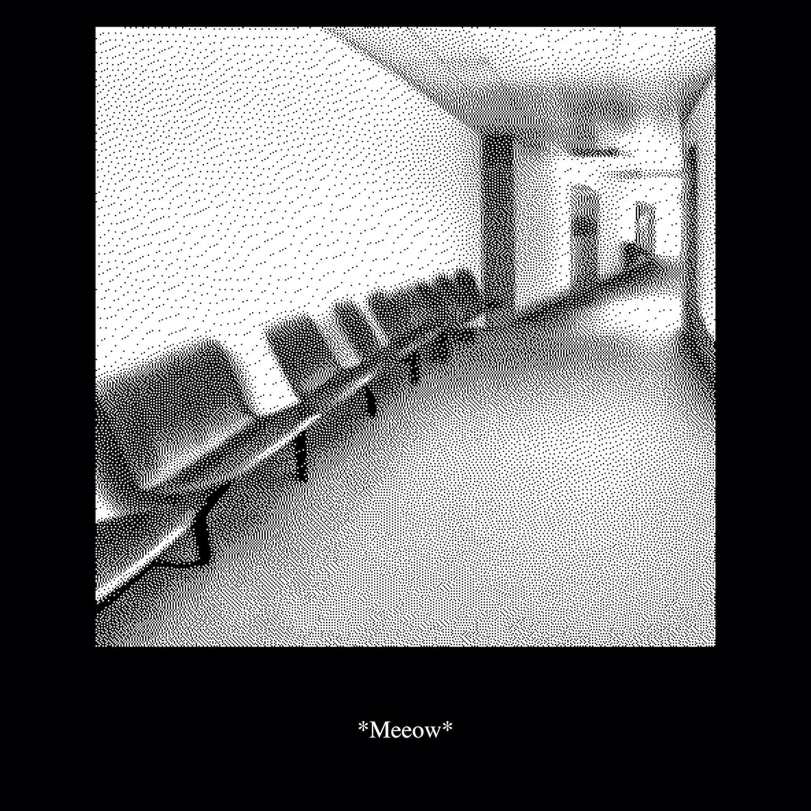
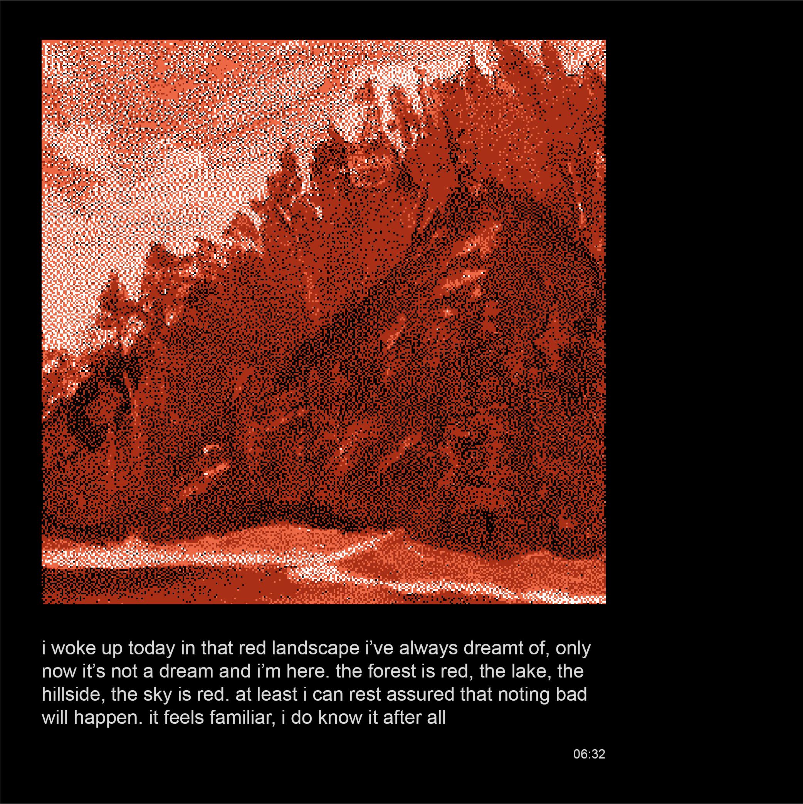

Let me tell you the whole story…
The Waiting Room (2022–) is an ongoing web-based work of interactive fiction inspired by reality shifting – a phenomenon described as "transcending" one's consciousness to a desired reality. The work is written and designed by Mina Amiri Kalvøy. Read both chapters below (desktop only).
Web development by David Barriga Ruano. Technical support by Julian Netzer and Nikola Marić.
 